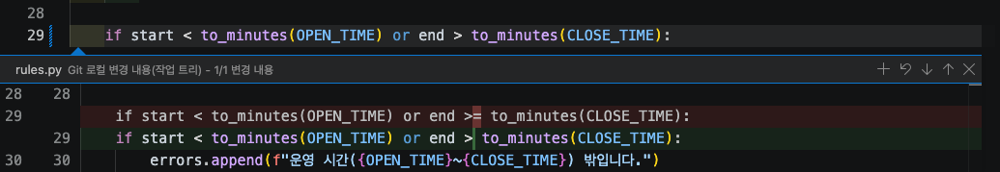

실습 2-3. 버그 잡기와 커밋¶
이 실습에서 할 일
- "18:00에 끝나는 예약이 안 된다"는 버그를 직접 재현합니다.
- 운영 규칙 문서를 근거로 Copilot(Agent 역할)에게 고치게 하고, 바뀐 내용을 검토합니다.
- 다시 실행하고 테스트로 검증한 뒤, 커밋하고 GitHub에 올려 자동 테스트("테스트")가 초록인지 확인합니다.
예상 시간 약 14분
준비¶
room-practice가 VS Code에 열려 있고, 소스 제어 Changes 목록이 비어 있어야 합니다.- 이 실습은
main에 바로 커밋합니다. 4교시부터는 브랜치를 만들어 작업합니다.
STEP 1. 버그 재현하기¶
- 터미널을 엽니다(Windows
Ctrl+`, Mac⌃`). -
소회의실 B에 17:00~18:00 예약을 넣어 봅니다. 한 줄로 붙여 넣고 Enter를 누릅니다.
-
파일을 열지 않고 Chat에서 운영 규칙을 확인합니다. Chat 보기를 열고(Windows
Ctrl+Alt+I, Mac⌃⌘I) +(New Chat) → 역할 Ask를 고릅니다. - 입력 칸에
#02_현행까지 치면 파일 목록이 좁혀집니다.↑↓로02_현행_업무.md를 고르고Enter를 누릅니다. 입력 칸 위에 파일이 붙습니다. -
이어서 입력하고 Enter를 누릅니다.
확인: 답에 인용된 운영 규칙은 "09:00~18:00 (18:00에 끝나는 예약은 가능)"입니다. 인용이 이 문장과 다르면 답을 믿지 말고 파일을 열어 확인합니다. 규칙은 이렇게 적혀 있는데, 프로그램은 17:00~18:00 예약을 막습니다. 규칙과 프로그램이 다르므로 버그입니다.
STEP 2. Agent 역할로 고치기 요청¶
- Chat 보기를 엽니다(Windows
Ctrl+Alt+I, Mac⌃⌘I). - +(New Chat)로 새 채팅을 엽니다.
- Session Target Copilot, 역할은 Agent, 모델 Copilot Fusion로 맞춥니다.
- 입력 칸에
#02_현행_업무.md와#rules.py를 차례로 골라 첨부합니다. 탐색기에서 끌어다 놓아도 됩니다. -
Chat에 붙여 넣고 Enter를 누릅니다. 프롬프트는 ① 한 일 ② 나온 결과 ③ 원하는 결과와 근거 ④ 지킬 것 순서입니다. 왜 이렇게 쓰나요?
아래 명령으로 17:00~18:00 예약을 넣으면 실패합니다. python -m booking add --room R2 --title 마감회의 --date 2026-11-10 --start 17:00 --end 18:00 --booker 홍길동 --attendees 2 결과: [예약 실패] - 운영 시간(09:00~18:00) 밖입니다. 첨부한 현행 업무 문서의 운영 규칙에는 "18:00에 끝나는 예약은 가능"이라고 되어 있습니다. booking/rules.py만 고쳐서 18:00에 끝나는 예약은 되고, 18:00을 넘겨 끝나는 예약(예: 17:30~18:30)은 계속 막히게 해 주세요. 다른 파일과 data 폴더는 바꾸지 마세요. -
Copilot이 터미널 명령을 실행하겠다고 승인을 물으면, 명령을 먼저 읽고
python -m pytest나python -m booking ...처럼 이해되는 명령일 때만 허락합니다.
확인: Chat에 바뀐 파일 booking/rules.py와 변경 줄 수(diff 통계)가 보입니다.
/fix를 써도 됩니다
Ask 역할에서 rules.py의 운영 시간 검사 줄을 선택하고 /fix와 함께 같은 설명을 붙여 물어볼 수도 있습니다. 이 경우 Copilot이 고친 코드를 보여 주고, 반영 여부는 내가 정합니다.
Permissions는 Manual
오늘은 권한 수준을 Manual(도구 사용을 내가 승인)로 둡니다. 에이전트가 무엇을 실행하려는지 사람이 보고 허락하는 연습입니다.
STEP 3. 바뀐 내용 검토하기¶
diff는 파일이 바뀌기 전과 후를 비교해 보여 주는 화면입니다. 빨간 줄은 지운 내용, 초록 줄은 새로 쓴 내용입니다. 아래 방법 중 편한 것으로 엽니다.
-
편집기에서 바로 보기:
booking/rules.py를 엽니다. 바뀐 줄의 줄 번호 왼쪽에 색 막대가 보입니다. 이 막대를 클릭하면 그 자리에 diff가 펼쳐집니다.
위 예에서는
>=가>로 바뀌었습니다. 다 봤으면 펼쳐진 창 오른쪽 위의 ×로 닫습니다. -
소스 제어에서 보기: 왼쪽 활동 막대의 소스 제어 아이콘(가지 모양)을 누르고 Changes 목록에서
rules.py를 클릭합니다. 바뀌기 전과 후가 나란히 열립니다. - Chat에서 보기: Chat 답 아래에 바뀐 파일이 보이면 클릭해도 됩니다. 화면에 따라 보이지 않을 수 있습니다.
- 빨간 줄(지운 것)과 초록 줄(추가한 것)을 비교합니다.
확인: 운영 시간을 검사하는 줄의 끝나는 시간 비교가 바뀐 정도면 충분합니다. 바뀐 줄이 1~2줄이고 rules.py 말고 다른 파일이 바뀌지 않았으면 됩니다.
많이 바뀌었으면 되돌리기
겹침 검사까지 새로 만들었거나 다른 파일을 고쳤다면 요청 범위를 넘은 것입니다. Chat에서 내 요청에 마우스를 올리고 Restore Checkpoint를 눌러 되돌린 뒤, "운영 시간 검사의 끝나는 시간 비교만 고쳐 주세요"처럼 범위를 좁혀 다시 요청합니다.
STEP 4. 다시 실행해 검증하기¶
-
17:00~18:00 예약을 다시 넣습니다.
-
18:00을 넘기는 예약은 여전히 막히는지 봅니다.
확인: 17:00~18:00은 [예약 완료], 17:30~18:30은 [예약 실패]입니다.
STEP 5. 바뀐 예약 데이터 되돌리기¶
STEP 4의 예약 완료로 data/reservations.json에 #6이 추가되었습니다. 실습 데이터는 커밋하지 않습니다.
- 소스 제어(Windows
Ctrl+Shift+G, Mac⌃⇧G)를 엽니다. - Changes 목록에서
reservations.json에 마우스를 올립니다. - 굽은 화살표 모양의 Discard Changes(변경 취소)를 클릭하고, 확인 창에서 변경을 버리는 버튼을 누릅니다.
확인: Changes 목록에 rules.py만 남아 있습니다. Copilot이 테스트를 추가했다면 tests/test_rules.py가 함께 있을 수 있습니다.
STEP 6. 테스트 실행¶
확인: 실패 없이 passed만 나옵니다. 기존 테스트 4개가 그대로 통과해야 합니다(Copilot이 테스트를 추가했다면 숫자가 더 클 수 있습니다).
STEP 7. 커밋하고 GitHub에 올리기¶
처음 커밋하기 전에 소스 제어 보기를 한 번 둘러봅니다. 왼쪽 활동 막대의 소스 제어 아이콘(가지 모양)을 누릅니다.
| 부분 | 어디에 | 하는 일 | 같은 Git 명령 |
|---|---|---|---|
| 메시지 입력 칸 | 맨 위 | 커밋에 남길 한 줄 설명. 반짝이 아이콘으로 Copilot 초안 받기 | |
| Commit 버튼 | 입력 칸 아래 | 바뀐 것을 기록으로 남기기. 커밋한 뒤에는 Sync Changes로 바뀜 | git add + git commit |
| Changes | 버튼 아래 목록 | 커밋하지 않은 변경 파일. 내가 고친 것도, Copilot이 고친 것도 여기 보임 | git status |
| 파일 클릭 | Changes 목록 | 바뀌기 전과 후를 비교(diff) | git diff |
| Discard Changes (굽은 화살표) | 파일에 마우스를 올리면 | 그 파일을 마지막 커밋 상태로 되돌리기 | git restore |
| Sync Changes | 커밋한 뒤 버튼 자리 | GitHub의 새 커밋 받고 내 커밋 올리기 | git pull + git push |
| 그래프 | 맨 아래 | 커밋 기록. main과 구름 표시가 같은 줄이면 GitHub와 같은 상태 | git log |
확인: Changes에 booking/rules.py가 있습니다. data/reservations.json도 있으면 STEP 5로 돌아가 되돌립니다.
- 소스 제어 보기 위쪽의 메시지 입력 칸을 클릭합니다.
-
칸 안의 반짝이 아이콘(Generate Commit Message)을 눌러 Copilot의 초안을 받아 봅니다. 그다음 무엇을 왜 바꿨는지 드러나게 고칩니다. 예:
-
파란 Commit 버튼을 클릭합니다.
- "스테이징된 변경이 없습니다. 모든 변경을 스테이징하고 바로 커밋할까요?" 같은 창이 뜨면 Yes를 누릅니다.
- 버튼이 Sync Changes(변경 동기화)로 바뀌면 클릭합니다. 확인 창이 뜨면 OK를 누릅니다.
Sync Changes는 GitHub의 새 커밋을 받고(pull) 내 커밋을 올리는(push) 일을 한 번에 합니다. 지금은 받을 것이 없어 push만 일어납니다. 버튼 옆
↑1은 올릴 커밋 수,↓1은 받을 커밋 수입니다.
VS Code 버튼은 Git 명령과 같습니다
Commit은 git commit, Sync Changes는 git pull + git push, Discard Changes는 git restore와 같은 일을 합니다. 전체 표는 VS Code 버튼과 Git 명령에 있습니다.
- GitHub 로그인을 묻는 창이 뜨면 허락하고 브라우저에서 내 계정으로 로그인합니다.
- 오른쪽 아래에 "git fetch"를 정기적으로 실행할지 묻는 창이 뜨면 예를 누릅니다. GitHub에 새 커밋이 있는지 가끔 확인만 하는 기능이라 내 파일은 바뀌지 않습니다. 오후 팀 실습에서 팀원의 변경을 바로 알아챌 수 있습니다.
확인: Changes 목록이 비고, Sync Changes 버튼이 사라졌습니다.
커밋 메시지의 책임은 사람에게 있습니다
초안은 Copilot이 쓸 수 있어도, 맞는지는 내가 봅니다. 무엇을 왜 바꿨는지 한 줄로 씁니다. "버그 수정"보다 "18:00에 끝나는 예약 허용"처럼 결과가 드러나게 쓰면 나중에 이력을 읽기 쉽습니다.
STEP 8. GitHub에서 확인하기¶
먼저 VS Code에서 기록을 봅니다.
- 소스 제어 보기 아래쪽의 그래프를 펼칩니다. 커밋 기록이 위에서부터 최신순으로 보입니다.
18:00에 끝나는 예약 허용: 방금 내가 한 커밋입니다. 옆에 내 이름이 보입니다.Initial commit: 템플릿으로 리포지토리를 만들 때 생긴 첫 커밋입니다.- 최신 커밋 옆 main 표시와 구름 모양 표시가 함께 있으면, 내 PC와 GitHub가 같은 커밋에 있다는 뜻입니다. push가 된 것입니다.
f7 (HEAD -> main, origin/main, origin/HEAD) 같은 표시는 뭔가요?
터미널의 git log나 Copilot 답에서 보이는 표시로, 커밋 하나와 그 커밋을 가리키는 이름표입니다.
| 표시 | 뜻 |
|---|---|
f7... |
커밋의 짧은 번호(해시). 커밋마다 붙는 고유 번호 |
HEAD -> main |
내가 지금 있는 곳이 main 브랜치이고, 그 끝이 이 커밋 |
origin/main |
GitHub에 있는 main도 이 커밋을 가리킴. origin은 GitHub 리포지토리의 별명 |
origin/HEAD |
GitHub 리포지토리의 기본 브랜치. 보통 origin/main과 같음 |
HEAD -> main과 origin/main이 같은 줄에 있으면 내 PC와 GitHub가 같은 상태입니다. 그래프에서 main과 구름 표시가 같은 줄에 있는 것과 같은 뜻입니다. origin/main이 아래 커밋에 있으면 아직 push하지 않은 커밋이 있는 것입니다.
그다음 GitHub에서 봅니다.
- 브라우저에서
https://github.com/내아이디/room-practice를 엽니다. - 파일 목록 위 회색 줄에 방금 커밋 메시지
18:00에 끝나는 예약 허용이 보이는지 확인합니다. - 위쪽 Actions 탭을 클릭합니다.
- 맨 위의
18:00에 끝나는 예약 허용실행 기록(워크플로 이름 테스트)을 봅니다. 노란 원(실행 중)이면 1분쯤 기다립니다.
확인: 실행 기록 왼쪽에 초록 체크가 있습니다. 내 PC에서 돌린 테스트를 GitHub에서도 자동으로 다시 돌려 통과한 것입니다.
다 됐는지 확인¶
- 17:00~18:00 예약이 처음에는 실패하는 것을 재현했습니다.
- Agent 역할로 문서와 파일을 첨부해 고치게 했고, diff를 검토했습니다.
- 17:00~18:00은 성공, 17:30~18:30은 실패합니다.
-
data/reservations.json변경을 Discard Changes로 되돌렸습니다. -
python -m pytest가 통과합니다. -
18:00에 끝나는 예약 허용커밋이 GitHub에 있고, Actions의 테스트가 초록 체크입니다.
막히면¶
먼저 Copilot과 함께 해결합니다
오류 메시지나 막힌 상황을 Chat(Ask)에 붙여 넣고 원인과 해결 순서를 묻습니다. 아래는 자주 막히는 경우입니다. 묻는 방법은 막혔을 때에 있습니다.
Copilot이 파일을 고치지 않고 설명만 합니다
역할이 Ask인 경우입니다. 역할 선택기에서 Agent를 고르고 다시 요청합니다.
고쳤는데도 17:00~18:00이 실패합니다
rules.py가 저장되지 않았거나 다른 줄이 바뀐 경우입니다. diff를 다시 열어 운영 시간 검사 줄이 바뀌었는지 확인합니다. 안 바뀌었으면 Chat에 실패 결과를 그대로 붙여 넣고 다시 고쳐 달라고 합니다.
17:30~18:30도 예약 완료가 됩니다
너무 많이 고친 것입니다(예: 끝나는 시간 검사를 지움). Restore Checkpoint로 되돌리고 STEP 2 프롬프트로 다시 요청합니다. 이미 #6, #7이 들어갔으면 reservations.json을 Discard Changes로 되돌립니다.
Commit할 때 user.name, user.email을 설정하라고 나옵니다
터미널에서 git config --global user.name "홍길동", git config --global user.email "가입 이메일"을 실행하고 다시 Commit을 누릅니다.
Sync Changes에서 인증 오류가 납니다
VS Code가 띄우는 GitHub 로그인 창을 허락하고, 브라우저에서 room-practice를 만든 계정으로 로그인합니다. 막혔을 때의 Git 항목도 봅니다.
Actions의 테스트가 빨간 X입니다
실행 기록을 클릭하고 test 작업을 열어 빨간 글씨를 읽습니다. 대부분 PC에서 python -m pytest를 돌리지 않고 커밋한 경우입니다. PC에서 테스트를 통과시킨 뒤 다시 커밋하고 Sync Changes를 누릅니다.